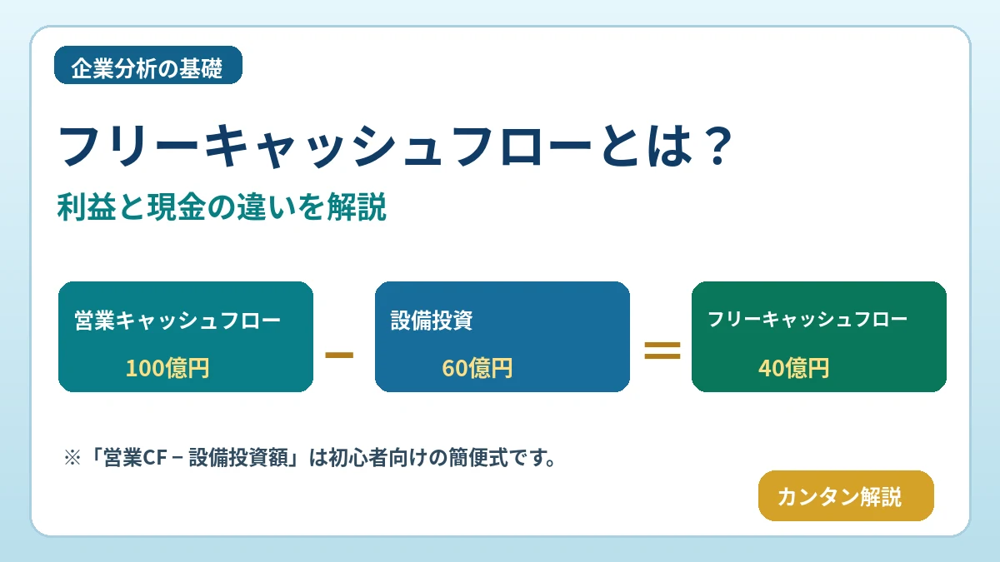

フリーキャッシュフローとは？黒字でも現金が足りなくなる理由と企業分析での見方を初心者向けに解説

決算で利益が出ているのに、なぜ現金が足りなくなるのでしょうか。フリーキャッシュフロー（FCF）の基本から、黒字と資金繰りの違い、配当・自社株買いとの関係まで整理します。
この記事の内容
フリーキャッシュフローとは？
フリーキャッシュフロー（Free Cash Flow：FCF）は、企業が事業で生み出した現金から、事業の維持・成長に必要な投資などを差し引き、資金余力を考える指標です。
借入返済、配当、自社株買い、次の投資などに使える資金の目安となります。ただし、 FCFに唯一の統一計算式はなく、企業・分析目的によって定義が異なります。 公表資料では計算対象を必ず確認しましょう。
利益とキャッシュフローの違い
損益計算書の利益は発生主義などの会計ルールに従って計算されます。一方、キャッシュフローは実際の現金の出入りに着目します。 黒字＝現金が十分にある、とは限りません。
- 売上を計上しても、売掛金の回収前なら現金は入っていない。
- 減価償却費は利益を減らしても、計上した期に現金を支払うとは限らない。
- 在庫を増やすための仕入れ支払いで現金が先に出ていく場合がある。
- 設備購入時には多額の現金が出ても、会計上の費用は減価償却を通じて複数年に配分される場合がある。
キャッシュフロー計算書の3つの区分
| 区分 | 主な内容 | 読み方 |
|---|---|---|
| 営業CF | 本業を中心とする営業活動による現金増減 | プラスなら現金を生み出す傾向。ただし一時要因も確認 |
| 投資CF | 設備投資、資産取得・売却など | 成長投資でマイナスになることもある |
| 財務CF | 借入・返済、配当、自己株式取得など | 借入でプラス、返済・株主還元でマイナスになることもある |
各区分のプラス・マイナスだけで企業の良し悪しは判断できません。事業の状況と内訳が重要です。
フリーキャッシュフローの計算方法
FCF ＝ 営業キャッシュフロー − 設備投資額
架空企業の営業CFが 100億円 、設備投資額が 60億円 なら、簡便的なFCFは 40億円 です。
この式は初心者向けの 簡便的な定義 です。企業によっては「営業CF＋投資CF」をFCFと呼びます。投資CFには設備投資以外に資産売却・取得なども含まれるため、両者の結果は一致するとは限りません。設備投資に有形・無形資産のどこまで含めるかにも注意が必要です。
フリーキャッシュフローがプラスの場合
本業で得た現金が設備投資などを上回り、資金余力が生まれている可能性があります。資金は借入金返済、配当、自社株買い、新規事業投資、現預金積み増しに利用される場合があります。
ただし、多額の債務、投資不足、資産売却などの事情もあり、 FCFプラスだけで財務健全性は保証されません。
フリーキャッシュフローがマイナスの場合
FCFマイナスの原因は、成長に向けた設備投資の拡大、本業の現金創出力の低下などさまざまです。
| ケース | 営業CF | 設備投資 | 注目点 |
|---|---|---|---|
| 成長投資型 | プラス | 積極投資で大きい | 投資の収益化、資金調達余力 |
| 本業悪化型 | マイナスまたは弱い | 通常水準でも負担 | 売上回収、採算、運転資金 |
FCFマイナス＝必ず経営不振ではありません。 理由と継続期間を確認しましょう。
黒字なのに現金が足りなくなる理由
架空の製造会社を考えましょう。売上が伸び、損益計算書では利益が出ています。しかし売掛金がまだ回収できず、仕入代金と設備購入の支払いが先に来ると、手元の現金が不足することがあります。
- 売上・利益を計上 商品を納品し、帳簿上は黒字になる。
- 売掛金の回収が遅れる 売上代金はまだ現金になっていない。
- 在庫・仕入れの支払い 原材料や人件費の支払期限が先に来る。
- 設備投資にも現金が必要 機械購入などの支払いが重なる。
- 資金繰りが厳しくなる 利益が出ていても支払いに必要な現金が不足する。
支払い不能が深刻化すれば、黒字でも事業継続が難しくなる場合があります（いわゆる黒字倒産）。ただし、 黒字倒産とFCFマイナスは同義ではありません。 FCFがマイナスでも手元資金や資金調達で支払いを続けられる企業はあります。
フリーキャッシュフローと自社株買いの関係
FCFは配当や自社株買いを継続する余力を見る参考になります。ただし、自社株買いが必ず当期FCFの範囲内で実施されるわけではありません。過去に蓄えた現預金や借入金などを使う場合もあります。
フリーキャッシュフローと配当金
配当を継続するには現金創出力が重要です。ただし、会社法上の分配可能額などの制約があり、 FCFは法的な配当可能額そのものではありません。 高配当利回りだけで判断せず、利益、営業CF、FCF、現預金、負債を合わせて確認します。
フリーキャッシュフローと企業価値
DCF法（ディスカウント・キャッシュフロー法）は、将来生み出すキャッシュフローを予測し、リスクや時間価値を反映した割引率で現在価値に換算して企業価値を考える方法です。
DCFで使うFCFには企業全体の資金提供者に帰属する FCFF などの定義があり、単純な「営業CF−設備投資額」と必ずしも一致しません。予測と割引率の前提によって評価結果も変わります。
フリーキャッシュフローを見るときの注意点
- □ 単年度だけでなく複数年の推移を見る
- □ 営業CFが安定しているか確認する
- □ 設備投資の内容・目的を確認する
- □ 売掛金や棚卸資産が増えていないか見る
- □ 一時的な資産売却の影響を確かめる
- □ 借入金や現預金の状況を確認する
- □ 同業他社と比較するときは計算方法をそろえる
- □ 業種と企業の成長段階を考慮する
企業の決算資料でどこを確認する？
決算短信、決算説明資料、有価証券報告書のキャッシュ・フロー計算書を確認しましょう。決算短信ではCF計算書の掲載範囲が異なる場合があるため、有価証券報告書なども参照します。
- 営業活動によるキャッシュ・フロー
- 投資活動によるキャッシュ・フロー
- 有形固定資産の取得による支出
- 無形固定資産の取得による支出
- 現金及び現金同等物の期末残高
設備投資額の定義や開示方法は企業によって異なります。項目名と注記を確認し、すべてを同一条件で比較できるとは限らない点に注意してください。
公式情報： 金融庁 EDINET ／ 日本取引所グループ（JPX）
関連解説： 決算発表とは？
よくある質問（FAQ）
フリーキャッシュフローとは何ですか？
事業で生み出した現金から必要な投資などを差し引き、資金余力を考える指標です。定義は一つではありません。
フリーキャッシュフローはどう計算しますか？
代表的な簡便式は営業CF−設備投資額です。営業CF＋投資CFとする企業もあります。
営業キャッシュフローとの違いは？
営業CFは営業活動による現金の増減です。FCFはそこから設備投資などを考慮した資金余力の指標です。
FCFがマイナスだと危険ですか？
必ずしも危険ではありません。積極的な成長投資が原因の場合もあり、営業CFや財務状況と併せて見ます。
黒字でも現金が足りなくなるのはなぜですか？
売掛金が未回収でも売上・利益を計上でき、仕入れや設備投資の支払いが先行する場合があるためです。
FCFが多い企業は優良企業ですか？
FCFの大きさだけでは判断できません。投資不足、負債、単発要因、成長性なども確認します。
自社株買いとFCFにはどんな関係がありますか？
FCFは株主還元余力の参考ですが、自社株買いは現預金や借入れで実施される場合もあります。
FCFは企業価値評価に使われますか？
DCF法などで用いられます。ただし評価に使うFCFF等は簡便的なFCFとは定義が異なる場合があります。
まとめ
利益と現金の増減は異なります。FCFは企業の現金創出力と資金余力を見る参考指標ですが、複数の定義があり、プラス・マイナスだけで企業の良し悪しは判断できません。設備投資、成長段階、配当・自社株買い、複数年の推移、借入金や現預金の状況を併せて確認しましょう。
関連記事
ご利用にあたっての注意事項
本記事は金融教育を目的とする一般的な情報提供であり、特定銘柄の売買を推奨するものではありません。実際の投資判断では企業の最新開示資料等を確認し、ご自身の判断と責任で行ってください。